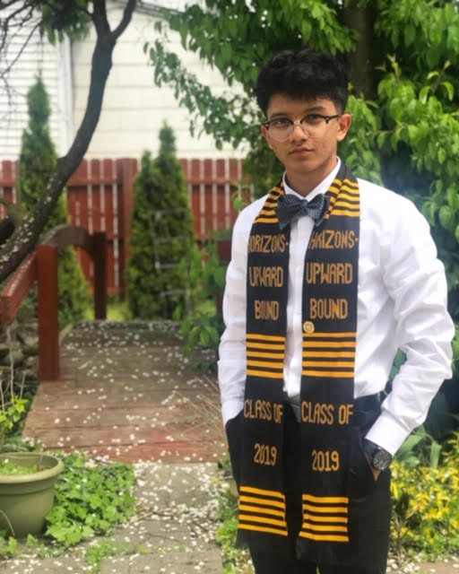

“Samia Rahman is a FIRST Robotics Alumni and work as a senior analyst in DTE energy. As being a first generation
Bangladeshi-American, she always wanted to help the local immigrant community. Her passion for FirstRobits and helping
others made her to create the “ Team Infinity- 7168”
"Robotics helped me understand applied science. High school lessons were dry, and for me was hard to comprehend off
textbooks. With the hands on experience, and using the material to develop a robot really puts a solid foundation.
Furthermore, it develops communication and leadership skills; essential for every project.
"Robotics helped me understand applied science. High school lessons were dry, and for me was hard to comprehend off
textbooks. With the hands on experience, and using the material to develop a robot really puts a solid foundation.
Furthermore, it develops communication and leadership skills; essential for every project.
